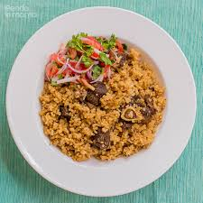

Cate's Caterers
Locally minded, Seasonally Inspired.
Excellence in food, and service you can trust!
Cate's Catering Company specialises in mouth watering delicacies that caters for all your meals as per your request.
About Us
We have been on location catering to residents of Nairobi and its environs for the last 10 years and have been recognised as the Best Catering Company 4 times within the region. We offer our services to occasions such as;
- Birthdays
- Weddings
- Office parties
- Graduation parties
Our Menu
We offer a wide variety of meals and ready to select menus depending on your occassion and budget. Our food is handled by expert chefs and we use fresh produce brought in our kitchen daily that are gotten from local producers that we work with to promote our local economy.
- BEVERAGES/DRINKS
- BUFFET
- KID'S MENU
- SNACKS/BITINGS
- DESSERT
- Rice
- Pilau 
- Ugali
- Chapati
- Mukimo
- Chips
- Sodas and Fruit Juice (as per your choice)
We offer a wide selection of beverages ranging from sodas, to teas and natural fruit juices. All drinks are charged per glass or on the number of guests at a function.
Buffet offerings cater for both vegetarian and non-vegeterian choices accompanied by various fruit and vegetable salads.
The menu is offered for 12 year olds and under. All selections include your choice of soda or fruit juice.
We have a wide variety of bitings like samosas, sausages, samosas, kebabs and cakes.
We have a variety ranging from cookies, to cakes to ice cream, that will end your meal on a high note. Our desserts are a sweet close to every meal. We have the usual flavours like vanilla, strawberry and choclate or combinations of these.
MENU ITEMS

Served with beef stew or chicken stew.
Marinated chicken or beef cooked with onions, tomatoes, cilantro and spiced with ginger, garlic, paprika and pepper.
Kes. 600/-
Rice with beef cubes fried with onions and spiced with garlic, ginger, paprika, pepper, cloves, bay leaves and pilau masala.
Kes 550/-
Ugali prepared with maize flour and served with either fish or chicken stew fried in onions & tomatoes served with steamed sukuma wiki, spinach or cabbage.
Kes 600/-

Chapatis prepared with wheat flour served with either beans, beef stew or chicken stew with a side serving of vegetables of choice.
Kes 650/-
Mukimo is prepared with potatoes, maize & spinach then fried in onions and tomatoes and seasoned with salt, margarine and black pepper.
Kes 450/-
Potato chips served with deep fried chicken or fish.
Kes 350/-